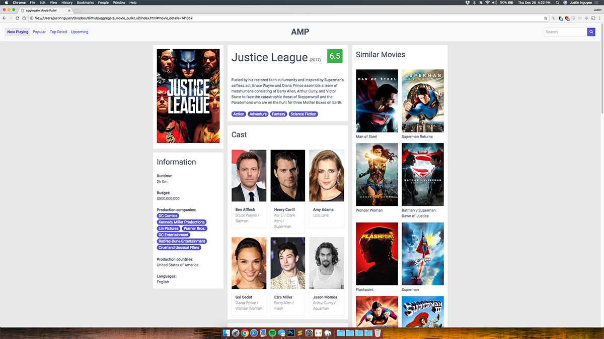
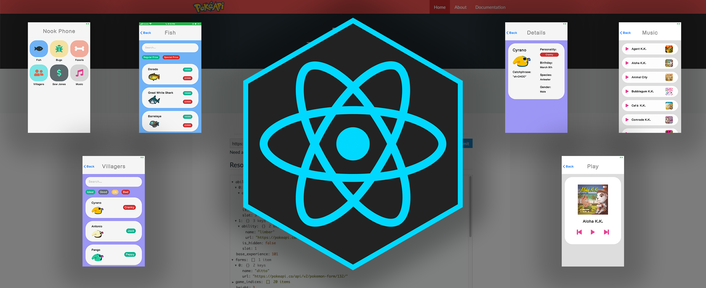
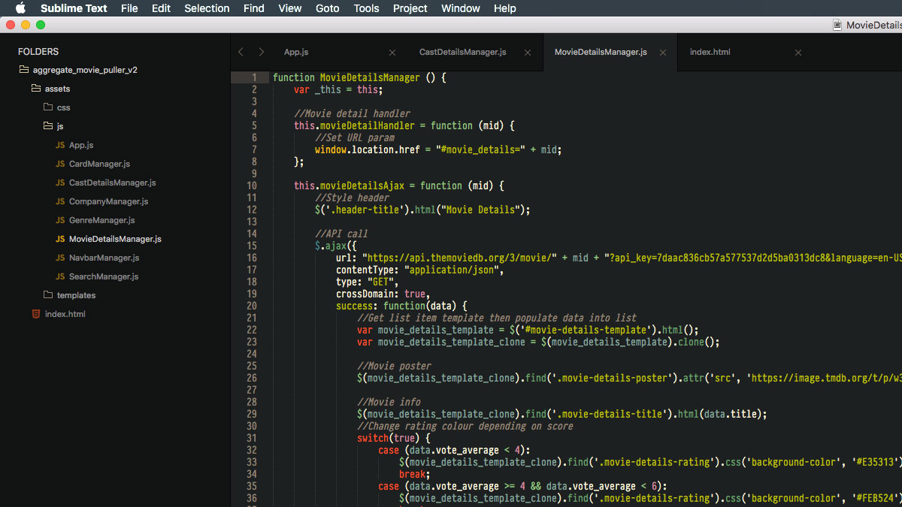

Aggregate Movie PullerSenior Frontend Engineer · Ottawa, ON
Justin Nguyen
Senior Lead Front End, Fire Products at ESO — architecting the NERIS Fire Incidents frontend, modernizing legacy stacks, and shipping AI-assisted workflows (TensorFlow.js, LLM PR review, Copilot/Cursor enablement) for teams across various products.
0
Years in software
0
AI initiatives shipped (on-device ML + PR automation)
0
Organizations across public safety & SaaS
About
Building interfaces that teams can scale
I’m a dedicated senior/staff-level engineer with 15+ years across full-stack work, with a strong lean toward frontend development, architecture, and raising the bar on quality. At ESO I architect the newest NERIS Fire Incidents frontend, collaborate across various teams, and lead legacy overhauls of AngularJS apps while keeping modern Angular apps current.
I’ve migrated flagship products from gulp + AngularJS to webpack + Angular 18+ with Confluence documentation that let various product teams upgrade faster. I mentor juniors through seniors on AI tooling (CoPilot, Cursor, Claude Code), and I care about Figma standards, component libraries, Sonar/Snyk gating, and tests to maintain high quality deployments.
Outside of work: travel, games, and cars — reminders that software should work for real people in messy environments.
Portfolio
Selected work
Side projects that mirror how I structure production apps—clear modules, honest UX, and room to grow.

ACNH companionReact Native game data app

AMP — architectureScalable client-side organization
Experience
Where I’ve shipped
Enterprise SaaS, public safety, and high-traffic mobile — always with an eye on craft and velocity.
-
Senior Lead Front End Developer, Fire Products
ESO · Ottawa, ON
– Present
- Architected frontend of newest NERIS Fire Incidents flagship application.
- Collaborated with various teams on implementation including data team, DBA team, as well as EMS team looking to modernize their apps as well as ensuring proper data sharing and flow.
- Built custom AI machine learning model for NERIS app using TensorFlow.js. The model studies user behaviours and workflows to further automate and speed up incident reporting times by suggesting often-used value combinations.
- Teach junior, intermediate, as well as senior developers how to prompt and effectively use AI tooling in Cursor with using Plan mode in 4.6-opus while executing the builds with cheaper models.
- Leading overhaul of legacy applications using React, Redux, and Radix stateless libraries for internal component library.
- Rigorously maintain existing Angular applications ensuring they’re the latest 21 or latest JS maintained by Herodev.
-
Senior Front End Developer
ESO · Ottawa, ON
–
- Help establish engineering team’s frontend forum to discuss best practices and discoveries among all the teams.
- Migrated older flagship NFIRS Fire Incidents product from gulp AngularJS to a custom webpack Angular 15 build along with writing extensive Confluence documentation detailing the transition. This allowed 6 different product teams to upgrade their application quickly following said documentation.
- Work with designers to set Figma design standards.
- Contribute to component library which is being used by all the modern apps.
- Aid converting mono repo projects into smaller app services in serverless push to Azure to better automate and scale services.
- Build E2E and unit tests and help QA team in building tooling for different environments.
- Coordinate with teams to set a standard code gating framework behind SonarCloud and automated tests.
-
Senior Front End Developer
Field Effect Software · Ottawa, ON
–
- Lead the front end build of Cyber Range using a new, ground-up React framework to replace their original UI built in GWT.
- Used a combination of Redux for state management and various TanStack tools for data grids, routing, etc.
- Used WebSockets to update many UI states as VMs in Cyber Range update OS and network statuses live.
- Heavily contributed to company component library.
- Collaborated with UI designers and developers to make decisions on dependencies, tooling, and frameworks to be used company-wide.
- Implemented unit (Jest/Enzyme) and E2E (Webdriverio) testing suite and deployment automation via Bamboo and BitBucket.
Toolkit
Tools & focus
Enterprise Angular and .NET stacks, plus React ecosystems where I lead greenfield and migrations — aligned with how I ship at ESO and Field Effect.
- TypeScript & JavaScript
- Angular & AngularJS
- React & React Native
- C# & .NET
- Azure DevOps
- Node.js
- Figma
- Magic Patterns
- E2E & unit testing
- TensorFlow.js
- Cursor, Claude Code, & CoPilot